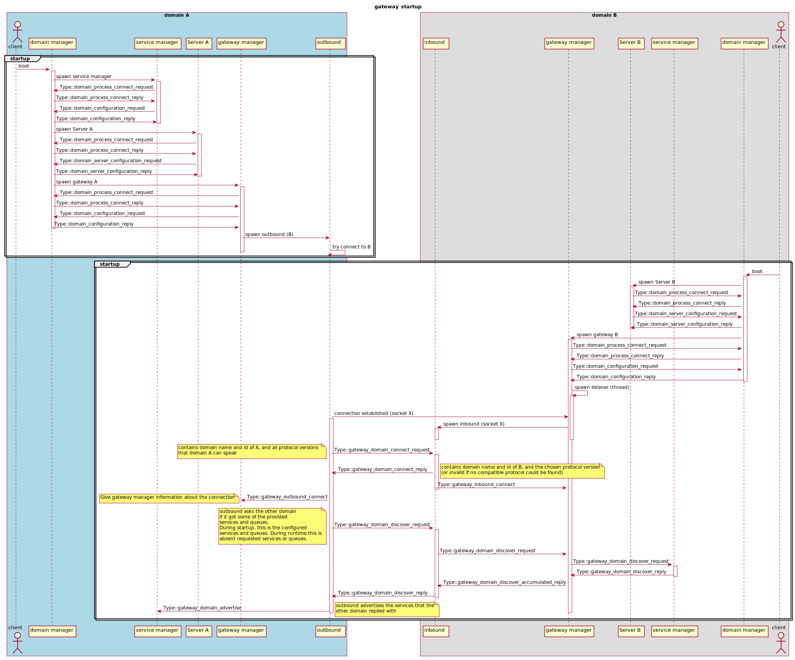
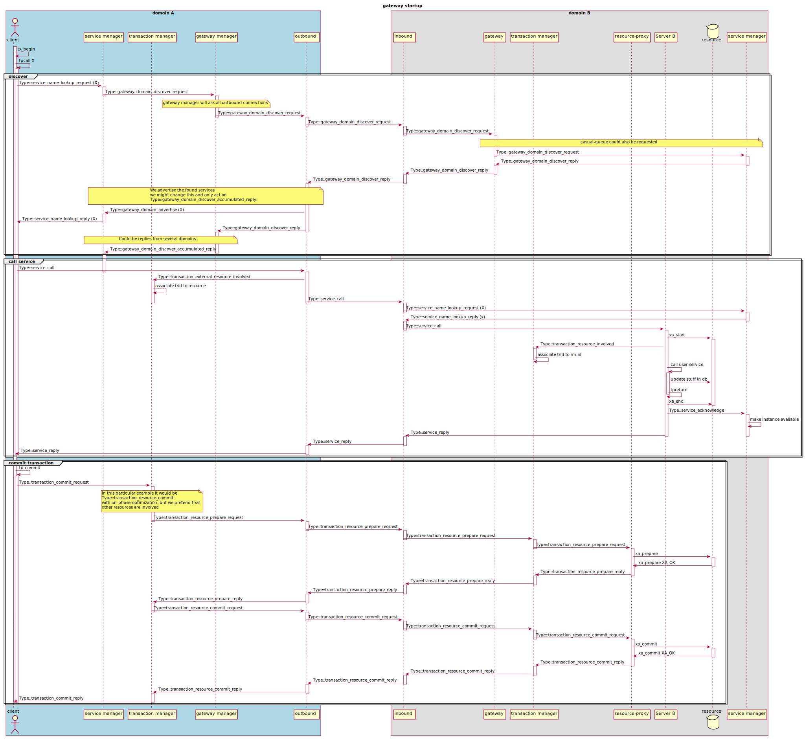

interdomain semantics¶
Aims to try to give an overview on how the communication works between casual domains
startup¶
The following diagram illustrates the startup procedure

call absent service¶
The following diagram illustrates how an absent service is discovered and then called. Followed by a commit
